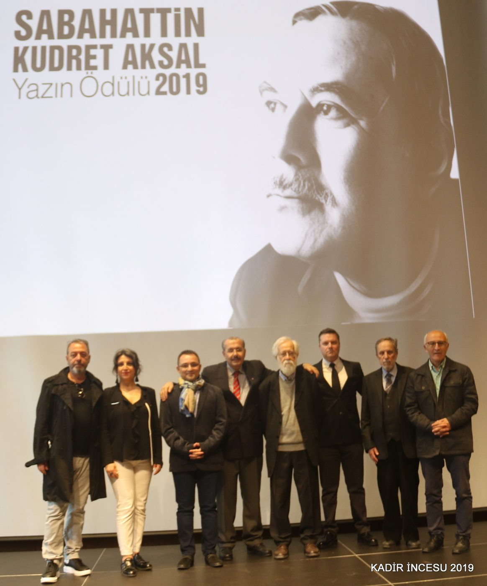

News and documents
Press and awards
2008–2025

This page compiles awards, plaques of appreciation and media coverage documenting Arif Yılmaz’s academic work. Most of the news items date from his years at Gaziantep University, where he chaired the Department of Turkish Education, advised the student society Türkçe Topluluğu and directed TÖMER, the university’s Turkish Language Teaching Application and Research Center. The most recent items cover his term as a visiting professor in Samarkand and his visits to universities across the Turkic world. Original news sources can be accessed by selecting the respective headlines. Archival copies of Uşak University press releases are also preserved on this site (in Turkish).
Awards
2019 Sabahattin Kudret Aksal Literary Prize, Jury’s Special Award
The jury, chaired by Eray Canberk, met on 28 March 2019 and gave its special award to Arif Yılmaz. Its decision praised the scholarly method and care with which he had prepared for publication Aksal’s works together with the writings he had left in journals and newspapers, his interviews and his replies to literary questionnaires. The award was presented on 25 April 2019, Aksal’s birthday, at a ceremony held at Yapı Kredi Yayınları. In an interview with Kadir İncesu in the newspaper BirGün, Canberk described the gathering of writings that were fading from memory on the pages of journals and newspapers as a contribution to literary history.
Interview with Eray Canberk (BirGün, 1 May 2019, in Turkish)Sabahattin Kudret Aksal file


Photographs by Kadir İncesu.
Plaques and certificates
- 6 December 2011Certificate for volunteeringOn the occasion of the European Year of Volunteering, he was among the faculty members who received certificates at a ceremony organized by the Educational Volunteers Foundation of Turkey (TEGV), Gaziantep University and the Gaziantep Chamber of Commerce.Gaziantep University News Center
- 29 March 2011Plaque from the Department of Health, Culture and SportsGaziantep University’s Department of Health, Culture and Sports presented Arif Yılmaz with a plaque for his support of the student societies Türkçe Topluluğu and Bilinçli Gençler Topluluğu.Gaziantep University News Center
In the Uzbek media
Two conferences that Arif Yılmaz attended during his term as a visiting professor in Samarkand were covered by the Uzbek media. Both reports include short interviews with him.
Samarqand MTRK, Diyor yangiliklari
October 2024
The conference on intercultural dialogue held at the Samarkand State Institute of Foreign Languages on 10–11 October 2024 was covered in the news program of the Samarkand regional television. In the report Arif Yılmaz answers questions as the conference participant from Türkiye.
The video lasts 2 minutes 56 seconds. The department’s news report on the conference is also kept on this site (in Turkish).
Asia Technology University (Osiyo Texnologiyalar Universiteti)
November 2024
The press office of the university in Karshi announced its philology conference of 15–16 November 2024 with a news video. In the video Arif Yılmaz, introduced as an associate professor at Uşak University, shares his views on the conference.
The video lasts 2 minutes 45 seconds. The department’s news report on the conference is also kept on this site (in Turkish).
Videos from Arif Yılmaz’s personal archive.
In the press
- 2 January 2025Visit to Kyrgyz-Turkish Manas UniversityAs head of department he met Professor Recai Doğan, Vice-Rector of Manas University, to discuss cooperation between the Department of Turkish Language and Literature at Uşak University and the Department of Turkology at Manas University. The visit continued with a trip to Balasagun, one of the capitals of the Karakhanids.Uşak University, Department of Turkish Language and LiteratureFull report (in Turkish)
- 28 December 2024Visit to Khoja Akhmet Yassawi UniversityHe visited the Department of Turkology at Khoja Akhmet Yassawi International Kazakh-Turkish University in the city of Turkistan, Kazakhstan, and discussed joint projects and student exchange with the head of department, Dr. Kenan Semiz.Uşak University, Department of Turkish Language and LiteratureFull report (in Turkish)
- 15 November 2024Paper in Karshi: “Dijital Çağda Şiirin Metamorfozu”At the philology conference held by Asia Technology University in Karshi, he presented a paper on the Instagram posts of the poet İbrahim Tenekeci. The title means “The Metamorphosis of Poetry in the Digital Age”.Uşak University, Department of Turkish Language and LiteratureFull report (in Turkish)News video
- 14 October 2024Paper in Samarkand: “Yabancılaşmanın Dili”At the international conference on intercultural dialogue held by the Samarkand State Institute of Foreign Languages, he presented a paper on the symbols of alienation in Hakan Günday’s novel Daha. The title means “The Language of Alienation”.Uşak University, Department of Turkish Language and LiteratureFull report (in Turkish)News video
- 13 October 2024Visiting professor in SamarkandUnder the faculty exchange between Uşak University and the Samarkand State Institute of Foreign Languages, he began teaching Turkish language and modern Turkish literature in Samarkand in the fall semester of 2024–2025. The Rector of the Institute, Professor Xolikov Bahodir Alikulovich, received him in his office.Uşak University, Department of Turkish Language and LiteratureFull report (in Turkish)
- 9 March 2017Lecture “Mehmet Akif Ersoy ve İstiklal Marşı”During the week commemorating the adoption of the National Anthem and Mehmet Âkif Ersoy, he gave a lecture in the Mustafa Kemal Paşa Amphitheater of Uşak University.Uşak University, Department of Health, Culture and Sports, Annual Report 2017Poster and details
- 7 July 2012International students visit the RectorNineteen students from 13 countries attending the Turkish Summer School that TÖMER organized with the Yunus Emre Institute visited the Rector, Professor M. Yavuz Coşkun, together with TÖMER Director Arif Yılmaz.Gaziantep University News Center
- 27 January 2012Training seminar at TÖMERProfessor Engin Uzun, Director of Ankara University TÖMER, was the guest of a training seminar organized by Gaziantep University TÖMER. Arif Yılmaz attended the seminar as Director of TÖMER.Gaziantep University News Center
- 25 November 2011Information and exchange meeting at TÖMERAt a meeting organized by TÖMER and Türkçe Topluluğu together with the Turkish Teaching Center of Gazi University, he spoke on the aims of Turkish language centers and the place of Gaziantep University TÖMER in this field.Gaziantep University News Center
- 4 November 2011Türkçe Topluluğu at the First Great Turkish Language CongressMembers of Türkçe Topluluğu, the student society he advised, took part in the First Great Turkish Language Congress (I. Büyük Türkçe Kurultayı), held in Ankara by Bilkent University and the Genç Kalemler Association.Gaziantep University News Center
- 6 September 2011Certificate ceremony at TÖMERStudents of Turkish from Salahaddin University in Northern Iraq completed the Turkish language program at TÖMER and received their certificates at a ceremony attended by TÖMER Director Arif Yılmaz.Gaziantep University News Center
- 9 March 2011Commemoration of Niyazi Yıldırım GençosmanoğluHe chaired the commemoration prepared jointly by Türkçe Topluluğu and İLESAM and spoke on Gençosmanoğlu as an epic poet.Gaziantep University News CenterProgram and photographs
- 19 January 2011Book donation to a primary schoolTürkçe Topluluğu donated books to Atatürk Primary School in Şahinbey. The books were handed to the school principal during a visit by students of the society and its academic advisor, Arif Yılmaz.Gaziantep University News Center
- 17 December 2010Ceremony of thanks at Türkçe TopluluğuStudents who had performed in the Teachers’ Day recital received certificates of appreciation. Arif Yılmaz gave the speech of thanks on behalf of the society.Gaziantep University News Center
- 23 September 2010Visit to the Rector on Turkish Language DayTürkçe Topluluğu and its academic advisor, Arif Yılmaz, visited the Rector, Professor M. Yavuz Coşkun, to present the work of the society. The visit also touched on the society’s trip to the Department of Turkish Language and Literature at the University of Aleppo and its poetry recital in Aleppo.Gaziantep University News Center
- 20 May 2009Poetry recital “Mısralarla Yalnızlık”Students of the Department of Turkish Education gave the recital at the Atatürk Cultural Center. At its close he presented them with certificates of appreciation as head of department.Gaziantep University News Center
- 11 November 2008Panel “Atatürk’ü Anlamak: Eğitim, Dil ve Bilim”At the panel held during the commemoration of Atatürk on 10 November, he spoke on the bond between Atatürk and the Turkish language.Gaziantep University News Center